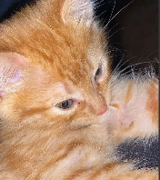

Sobre mí
Mi nombre completo es Manuel Alexander Ortega Quiñones, estudiante de Ingeniería Civil Informática en la Universidad Autónoma de Chile en la sede de Temuco, actualmente cursando el cuarto año, segundo semestre. Nací el 16/04/2002, y he dedicado mi formación académica a desarrollar competencias profesionales estudiando diferentes áreas enfocadas en el desarrollo. Mi enfoque se centra en el desarrollo de aplicaciones web y móviles, además de la programación de software en general. Estoy comprometido con seguir mejorando mis habilidades de programación, habilidades blandas, y por supuesto, como ingeniero civil.
Ver en GitHubHobbies
En mi tiempo libre me gusta jugar videojuegos, principalmente shooters (aunque me gusta de casi todo), escuchar música y hacer ejercicio. También me gusta salir a caminar y comer bastante. Me interesa la tecnología y la informática, por lo que siempre estoy buscando aprender cosas nuevas y mejorar mis habilidades en programación.
Conocimientos
En el transcurso de mi carrera he aprendido a programar en varios lenguajes de programación, sobre todo orientados a objetos. También he aprendido a usar diferentes herramientas de desarrollo que me han permitido desarrollar proyectos pequeños. Además, he aprendido a trabajar en equipo, mejorar habilidades blandas claves, realizar tutorías que me permitieron aprender acerca de la enseñanza y desarrollar proyectos de manera eficiente.
Tecnologías
En mi viaje por el mundo del desarrollo web, he cultivado experiencia y habilidades en una variedad de tecnologías. Mi stack tecnológico incluye:
Web
- HTML
- CSS
- Wordpress
Backend
- PHP
- NodeJS
- Laravel
- MySQL
Lenguajes de programación
- Python
- Java
- JavaScript
Herramientas
- Git
- GitHub
- VSCode
- npm
- WordPress
- Docker
- NetBeans